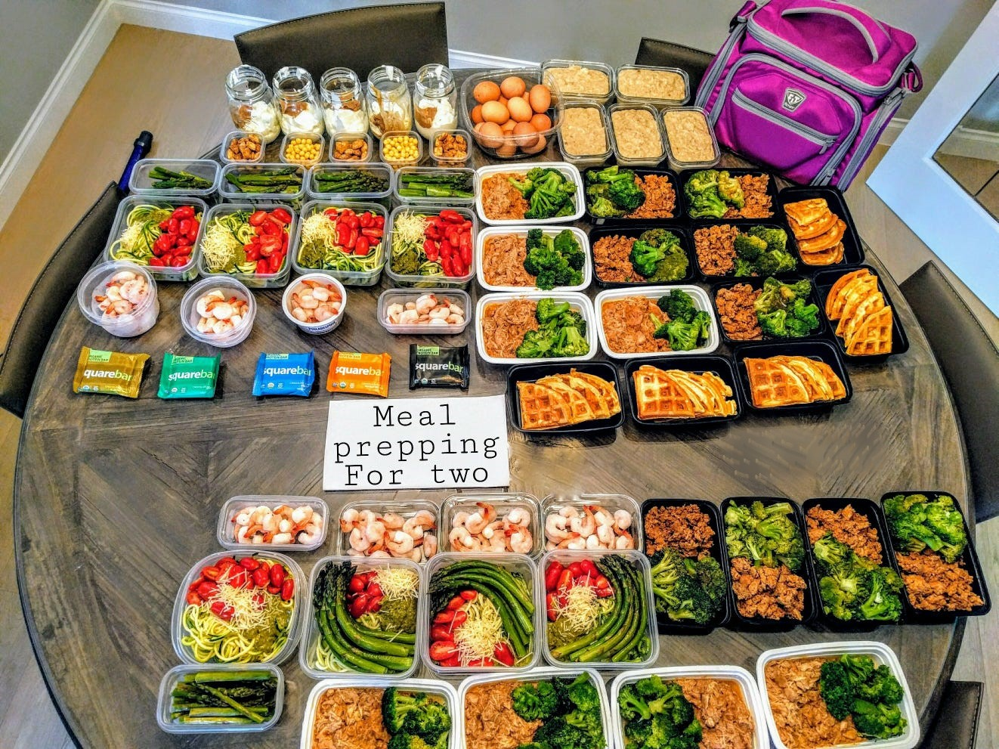
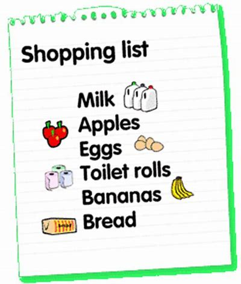
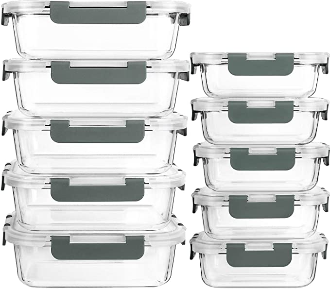
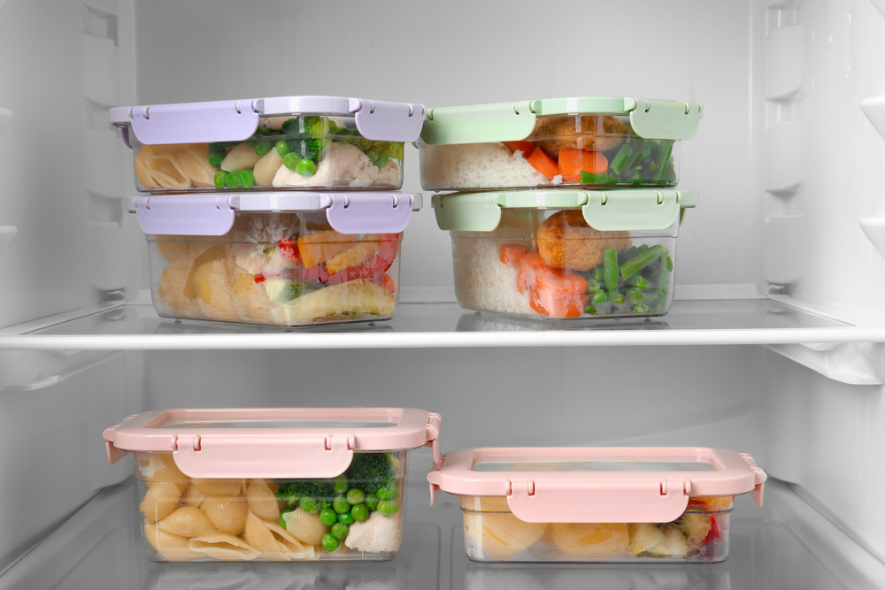

Meal Prepping
Introduction
Welcome to our meal prep page! Meal prepping is an excellent way to save time, reduce stress, and eat healthier throughout the week. With our tips and guidance, you'll learn how to plan, prepare, and store meals that are both delicious and nutritious. We'll provide you with practical strategies for meal prep, including choosing the right recipes, grocery shopping, and batch cooking. With a little bit of planning, you can have healthy meals ready to go in a matter of minutes. You'll also learn how to properly store and reheat your meals, ensuring that they stay fresh and tasty. Our meal prep page is designed to help you get started with meal prepping and take your meal planning to the next level. We believe that meal prepping is a game-changer when it comes to achieving your health and wellness goals. So, whether you're looking to lose weight, save time, or simply eat healthier, let us show you how meal prep can transform your life.
Planning
The planning stage is crucial for successful meal prepping. Start by deciding on the meals you want to prepare for the week or a few days in advance. This could include breakfast, lunch, dinner, and snacks. Consider the number of people you will be cooking for, any dietary restrictions or preferences, and the time you have available to prepare the meals. Once you have your meal plan, create a shopping list for the ingredients you will need.
Shopping
With your meal plan and shopping list in hand, it's time to hit the grocery store or place an order for delivery. Make sure to purchase fresh ingredients and any necessary pantry staples. If possible, try to buy in bulk to save money and reduce waste. Try to aviod processed foods where possible.
Prepping
The prepping stage involves washing and chopping vegetables, marinating meats, and cooking grains or legumes. It is helpful to use kitchen tools like a food processor, blender, or slow cooker to save time and energy. Try to multitask by preparing multiple dishes at once, such as roasting vegetables while cooking rice.
Portioning
Once the meals are prepared, it is time to portion them out into containers. This helps with portion control and makes it easy to grab a meal on-the-go. Use meal prep containers or simply store the meals in airtight containers. Measure out the appropriate amount of each dish and label the containers with the date and contents.
Storage
Proper storage is crucial to ensure the meals stay fresh and safe to eat. It is recommended to refrigerate meals for up to four days or freeze them for longer storage. Make sure to cool the meals to room temperature before storing them in the fridge or freezer. If freezing, leave some space at the top of the container to allow for expansion.
Reheating
When it's time to eat, simply reheat the meals in the microwave, oven, or stovetop. Make sure to follow food safety guidelines when reheating, such as heating the food to an internal temperature of 165°F (74°C). Enjoy your freshly prepared meals!